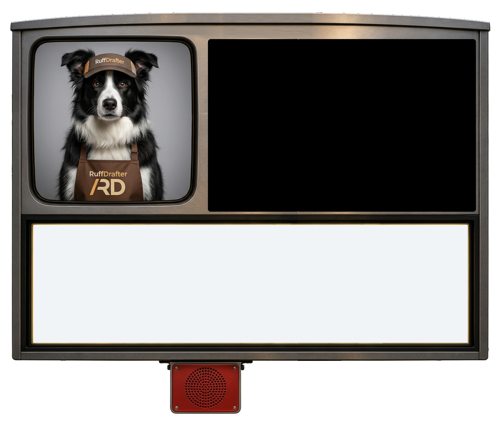

{{ persistenceStatus }}
SAVE AS
{{ fileGuardTitle }}
Save your current drawing to a file first?
INSERT PHOTO / PDF
underlay on {{ insertLevelName }}
Pick a PDF or image. It gets inspected first — vector PDFs are kept as-is, photos and scanned pages convert once to a compact image.
INSPECTING — {{ insertFileName }}…
{{ insertError }}
{{ row.label }}
{{ row.value }}
{{ insertVerdict }}
PAGE
{{ insertPageLabel }}
SCALE ON PAPER
{{ insertScaleError }}
WIDTH ON PLAN
{{ insertWidthError }}
{{ insertCalHint }}
REAL DISTANCE
{{ insertCalError }}
UNDERLAYS IN THIS DRAWING
{{ ur.label }}
CONNECT AT CORNER
This garage wall continues the house wall from the far side — pick the offset and the run shifts over square, or keep it IN LINE if the walls should align.
DETACHED GARAGE FOUNDATION
Grade beam gets a 4" slab sloping 1/8"/ft to the door on graded fill; thickened edge pours one LEVEL monolithic slab — 4" field, 1'-0" edge, 45° taper, on gravel.
{{ profileDialogTitle }}
{{ profileDialogDescription }}
Layer Philosophy
- Layers follow AIA-style CAD names (A-WALL-EXT, S-SLAB…) so drawings convert cleanly to AutoCAD/DXF.
- Commands assign layers automatically — the layers organize themselves, so nobody manages them by hand.
- Views (PLAN, FLOOR, ELECTRIC…) are display groupings only; the layer taxonomy is the source of truth for export. Layers can be shared across views — e.g. walls show in both PLAN and ELECTRIC but are only edited in PLAN.
File name
{{ profileExtension }}
Import an existing file
Drop a file here or choose one from your device.
{{ profileDialogMessage }}
Professor Gruff
CLOSE ALL OTHER BROWSER WINDOWS AND TABS FOR OPTIMAL PERFORMANCE. The drafting engine runs entirely on your machine — videos and busy tabs in the background can slow the cursor down.
Professor Gruff
Automatically using the default project settings to build your house now — trace away! To update this project's specifications press Escape, or hit the PROJECT button right up there.
{{ tourPopupTitle }}
{{ tourPopupNote }}
CLIMB — ENTER / SPACE / TAP
{{ turtleFacing }}
{{ turtleFeetLabel }}
PRESS BUTTON TO BUILD HOUSE PLAN
ROOM TRAY
Tap a name, then tap the plan.

Professor Gruff
An attached garage hangs off the house: click your first corner ON the house outline, draw the three legs out, around, and back, and land the last corner ON the house too. Missed it? No trouble — grab the corner and drag it onto the house.
Areas
Developed area per level with the room roll-up, recomputed from the drawing each time this opens.
{{ row.name }}
{{ row.sourceNote }}
{{ row.netLabel }}
gross {{ row.grossLabel }} {{ row.lessLabel }} {{ row.garageLabel }}
{{ row.roomsLine }}
{{ areasReport.suiteLine }}
{{ areasReport.garageLine }}
Building total
{{ areasReport.totalLabel }}
{{ areasReport.convention }}
Create Assembly
Name the selected drawing items, then choose whether this assembly stays rigid.
Y / ENTER / SPACE = FIXED · N / ESC = NOT FIXED
Draw / Edit
Build
{{ toolStripLabel }} — no tool options
Line Layer
Names and print rules live in Company Standard Layers.
Selection
{{ selectionModeHelp }}
Object Type
{{ selectFilterHelp }}
{{ groupActionHelp }}
{{ selectedGroupLabel }}
{{ selectedGroupDetail }}
Group Wall Assembly
BASE HEIGHTTOP HEIGHT
{{ groupWallDimensionError }}
Extend
{{ extendHelp }}
{{ extendMessage }}
Copy
{{ copyHelp }}
{{ copyMessage }}
Wall Type
Ref Line (Exterior Face)
{{ wallExtNote }}
Base Ht
Top Ht
Use 8-1 1/8, 8'-1 1/8", or 97.125"
{{ wallDimensionError }}
Floor · Structure
Total Thickness
{{ floorAssemblyLabel }}
{{ floorDimensionError }}
Shape
{{ shapeHint }}
Flooring
{{ shapeAreaLabel }}
ABOVE SHEATHING
Saves on A-FL-FLOORING · area + finish feed the future estimates
Outline
{{ buildHouseHint }}
Dimension
First string offset
{{ autoDimHint }}
{{ fenestrationHoleNote }}
Fenestration · Type
{{ fenestrationLayerNote }}
Width
Sill Ht
Head Ht
{{ fenestrationDimensionError }}
{{ stairOpeningReq }}
Stair Width
Headroom
{{ fenestrationDimensionError }}
{{ stairOpeningNote }}
Column · Pad Footing / Pile
{{ columnFootingNote }}
Beam · Mode
{{ beamModeNote }}
Stair · Shape
Stair · Handrail
Width
{{ stairWidthError }}
{{ stairLayoutNote }}
Kitchen
Bath
Laundry
Bedroom
{{ fixtureNote }}
Room Tags
Annotation · Leader End
Text Box
Fill Opacity %
Corner Bullnose
{{ noteStyleError }}
{{ noteStyleNote }}
Roof · Mode
Eave Overhang
Pitch (rise : 12)
{{ roofDimensionError }}
{{ roofHeelLabel }}
Elevations
{{ cut.name }}{{ cut.sideName }}
Levels
{{ level.name }}
{{ content }}
BONEYARD
Sections
Press [{{ cutShortcut }}] to cut a view
{{ cut.name }}{{ cut.sideName }}